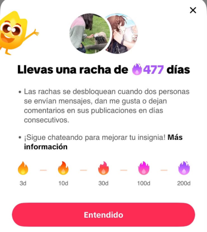
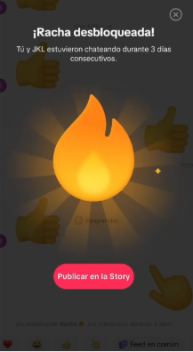
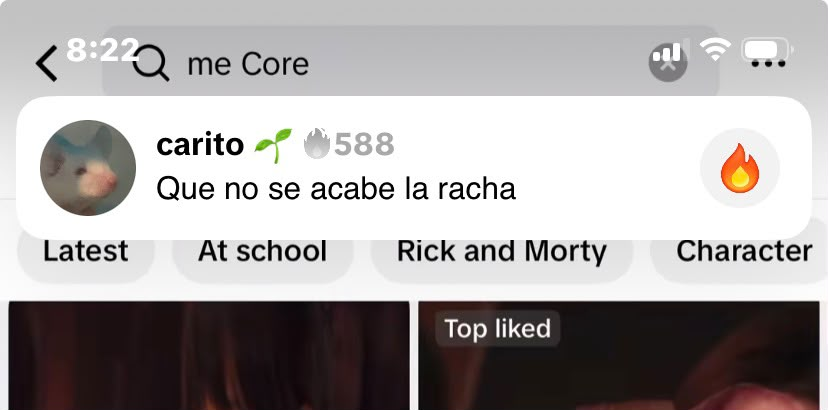
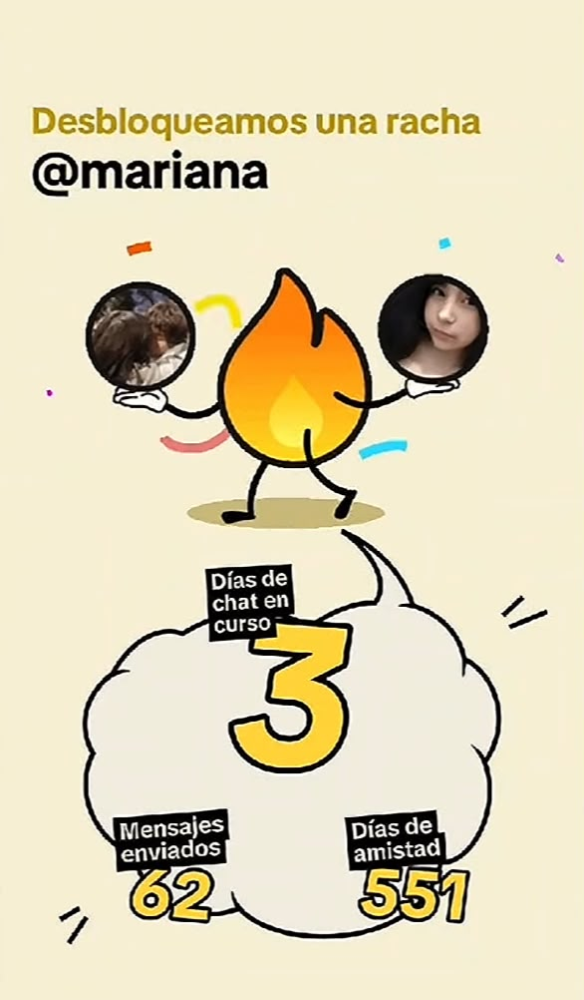

Sistema de Rachas
“Interactúa con tu amigo todos los días para no perder lo que han construido”
Comportamientos que premia o castiga
La racha premia la presencia diaria en la aplicación, convirtiendo la permanencia continua en una virtud. Al paso de los días con el aumento de las cifras, acumular día se vuelve atractivo y digno de mostrar, comportamiento que es incentivado a través de la opción de compartimiento de historias dentro de la aplicación. El diseño visual refuerza este premio, la racha se identifica con un fuego que se activa al mandar por lo menos un mensaje al día y se inactiva hasta que se vuelva a interactuar. Además, el fuego cambia de color según la cifra alcanzada, lo que hace que continuar la racha se perciba como un logro cada vez sea más valioso, volviéndolo aún más deseable. Por otro lado, el diseño castiga a través de perdida de la racha, implicando volver a empezar desde cero, anulando los días acumulados. Perdida que se siente fuerte ya que el valor de las cifras se ha convertido en un símbolo de logro.
Valores inscritos
Se prioriza el engagement sobre el bienestar, ya que pone énfasis a la interacción sostenida entre dos personas, el estado emocional del usuario pasa a segundo plano, independientemente como se sienta, debe de cumplir con el “deber” diario antes de perder la racha. Esta obligación se refuerza apelando al valor emocional, ya que la continuidad de la interacción se asocia con el mantenimiento de una relación significativa. Perder la racha deja de ser solo perder un número y pasa a sentirse como descuidar un vínculo. Asimismo, se obtiene un valor colaborativo, debido a que la racha solo puede mantenerse si ambas partes participan generando un acuerdo que refuerza la aplicación que sostiene la práctica día tras día. Esta va unida con el valor competitivo que se manifiesta en torno a las cifras. Las personas exhiben ante el resto los días acumulados, lo que solo tiene sentido porque el diseño asigna valor a ese número. Conectando con la idea de Bucher (2018) “las métricas no solo miden valor, sino que lo producen al hacer ciertas formas de reconocimiento visibles y perseguibles”.
Alternativas excluidas
El diseño excluye la posibilidad de interactuar cuando el usuario quiera, sin preocupación de perder la racha, las conversaciones dejan de ser espontáneas estableciendo parámetros rígidos diarios de la aplicación. Al igual que, queda excluida la opción de mantener el vínculo de amistad por otras aplicaciones, el sistema sugiere que el vínculo se refuerza y se sostienen dentro de la plataforma. Por último, se excluye la posibilidad de estar inactivo sin perder el progreso acumulado. Tiktok permite tener cinco intentos para reestablecer la racha, siempre y cuando sea dentro de las 48 horas establecidas. Si pasa cuyo limite, se pierde todo el progreso por lo que, estar inactivo no es una opción.
Beneficios
Beneficia al usuario, favorece una mayor cercanía con sus amigos, a proporcionar mayor contacto e interacción constante que mantiene la relación. La plataforma le sirve este sistema ya que necesita usuarios que estén pendientes a su contenido, necesitan que estos vuelvan a diario así se asegura de tener “seguidores fieles", que generen mayor interacción, obteniendo un mayor reconocimiento. Además, como la racha se comparte con amigos, funciona para expandirse, invita a más persona a instalar la aplicación y una vez dentro, la racha los retiene como usuarios estables. Este beneficio es económico, ya que una mayor frecuencia de interacción obtiene una mayor oportunidad para mostrar publicidad beneficiando a los anunciantes.



